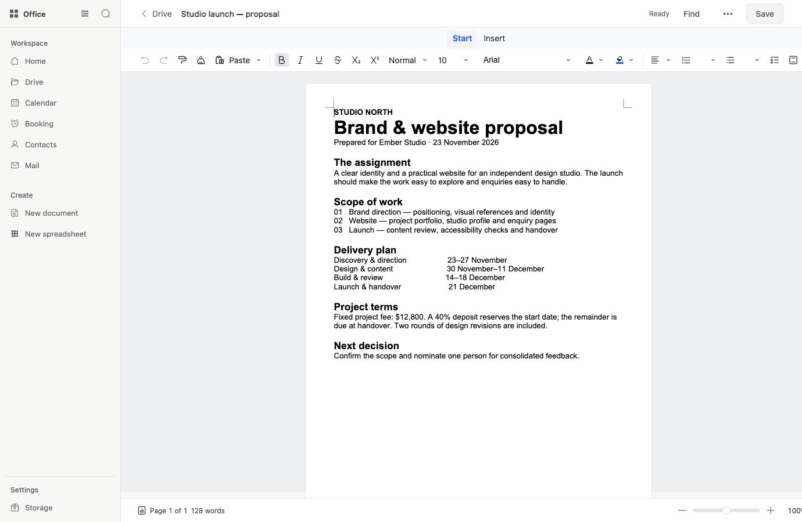
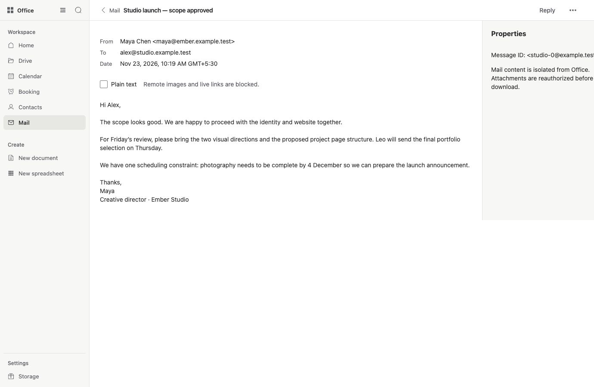
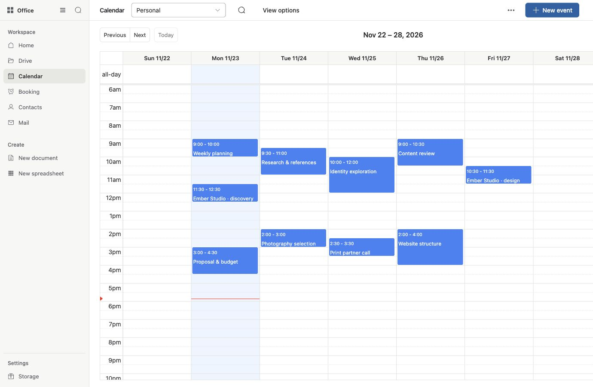

Your installation. Your data.
Choose where files and records are stored, who operates the workspace and who can access it.
{{product}}
{{intro}}
Documents, spreadsheets, files, email, contacts and scheduling, built into a workspace you run on your own computer or server.


Page layout and tables for proposals. Formulas and linked worksheets for budgets. Folders and previews for the supporting files.
Explore workspace
A searchable history of client correspondence, attachments from your files, and address books you can use through CardDAV.
Explore mail & contacts
Recurring commitments and CalDAV calendar access. Booking rules that leave time to prepare and protect your days off.
Explore calendar & bookingChoose where files and records are stored, who operates the workspace and who can access it.
Keep editable documents and workbooks, export contacts and calendars, and back up the complete workspace.
Choose when to update your installation and who is responsible for its availability and recovery.